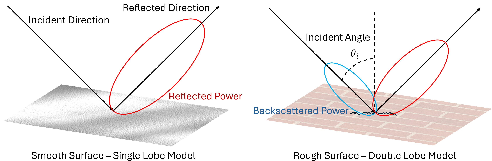
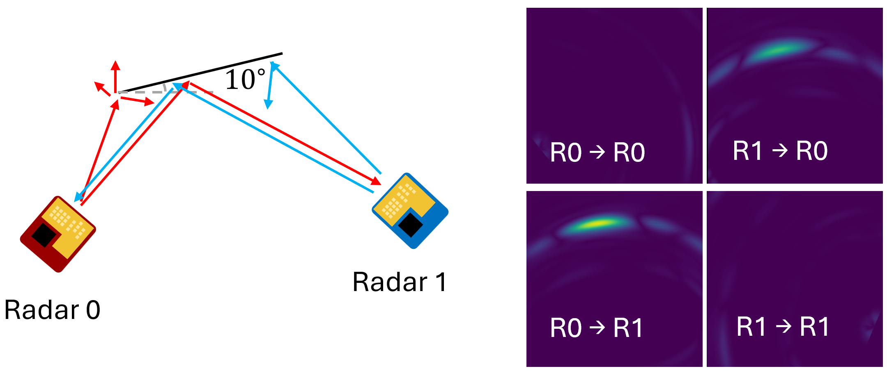
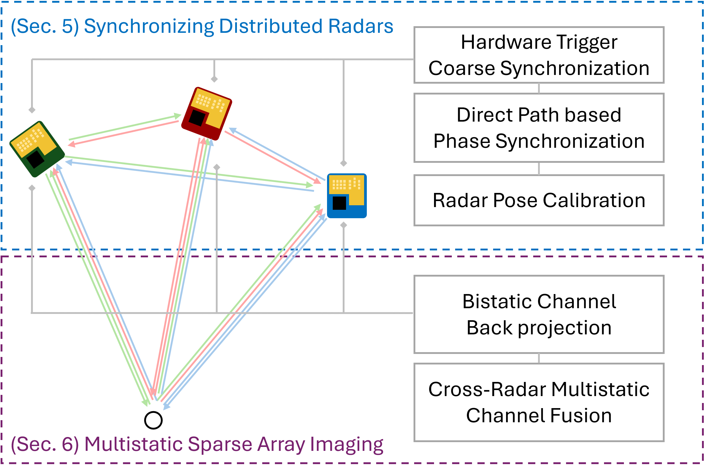
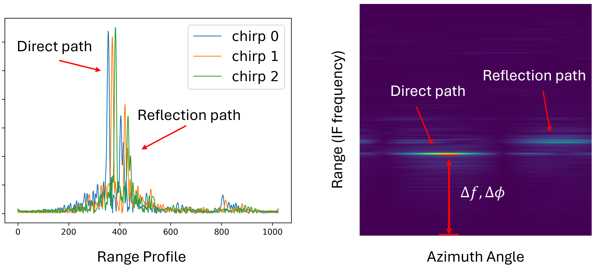
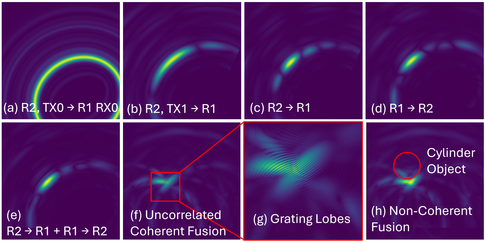
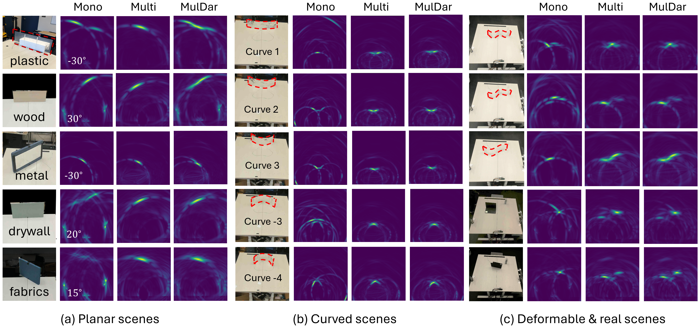
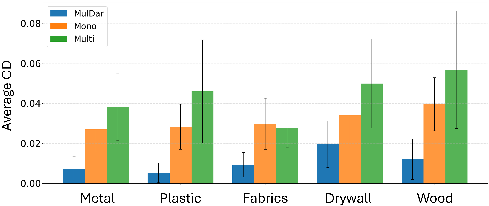

Key Contributions
- Distributed mmWave synchronization. MulDar engineers a direct over-the-air path between commodity TI AWR mmWave radars for coarse hardware-trigger synchronization and per-chirp phase/frequency/amplitude offset correction, enabling cross-device channel capture on COTS hardware with no hardware modifications.
- Multi-static bi-static imaging. A backprojection-based bi-static SAR imaging algorithm reconstructs the 2D scene from cross-radar channel measurements. Correlated channel pairs are coherently fused for SNR and resolution gain; uncorrelated pairs are non-coherently fused to add new viewpoints.
- Specular reflection recovery & ghost removal. By combining mono-static and bi-static measurements, MulDar detects objects invisible to any single radar and removes ghost multi-bounce artifacts — achieving a 66.79% reduction in Chamfer distance vs. mono-static baselines across planar surfaces, deformed reflectors, and real-world scenes.
Motivation

Mono-static radars suffer from specular blind spots: smooth planar surfaces reflect energy away from the radar, making them completely invisible.

Bi-static cross-radar channels reveal the planar reflector invisible to mono-static radars and disambiguate ghost multi-bounce artifacts.
System Overview

MulDar system pipeline: distributed radars transmit in a round-robin schedule, the direct path between radars is used for phase synchronization, and a backprojection algorithm fuses mono-static and bi-static measurements for full scene reconstruction.

Hardware-triggered chirps received from another radar containing random frequency and phase offsets, corrected using the direct-path peak as a reference.

Channel fusion strategy: correlated channels are coherently combined for resolution gain; uncorrelated channels are non-coherently fused to add new viewpoint information.
Results
We evaluate MulDar against two baselines: Mono, which fuses only mono-static reflections from each radar, and Multi, which fuses only the cross-radar bi-static channels. Across planar surfaces of different materials, deformed metal reflectors, and cluttered real-world scenes, MulDar consistently recovers geometry that both baselines miss. Mono-static radars see specular surfaces only as point reflections (or not at all), while bi-static-only fusion misses objects whose dominant return is mono-static. MulDar's joint fusion captures both, producing complete and ghost-free reconstructions.

Qualitative comparison across planar surfaces, deformed reflectors, and real-world scenes. MulDar (right) reconstructs objects that are invisible or ghost-distorted in the mono-static (left) and multi-static-only (center) baselines.
Quantitatively, we measure the two-way Chamfer distance between the reconstructed point cloud and the ground truth across planar surfaces of five materials — metal, plastic, wood, fabric, and drywall — rotated through a wide range of incidence angles. MulDar reduces the average Chamfer distance by 72.62% on metal, 81.03% on plastic, 69.47% on wood, 68.47% on fabric, and 42.38% on drywall, for an overall 66.79% improvement over the mono-static baseline.

Average Chamfer distance across planar surfaces of five materials. MulDar achieves a 66.79% reduction over the mono-static baseline.
We further deploy MulDar in real-world environments to demonstrate the benefit of cross-device channels for indoor sensing and SLAM. Across three indoor scenes — a corridor corner, an open area with multiple doors, and a circular pillar — the mono-static image misses entire walls and the bi-static-only image sees only fragments. MulDar's joint reconstruction recovers the full corridor geometry, including the curved arch and the pillar.

Indoor evaluation: MulDar images corridor corners, open areas, and pillars that mono-static radars miss entirely.
Finally, we evaluate MulDar in an automotive scenario, simulating a car pulling out of a lateral parking spot adjacent to another vehicle. Mono-static radars return only sparse point reflections from the neighboring car's smooth body panels, leaving most of its outline invisible. By combining mono- and bi-static channels across four distributed radars, MulDar continuously traces the full outline of the adjacent car — the kind of perception needed for safe collision avoidance in mmWave-only sensing stacks.

Automotive evaluation: MulDar detects the specular surfaces of a neighboring car that are invisible to conventional mono-static mmWave radars.